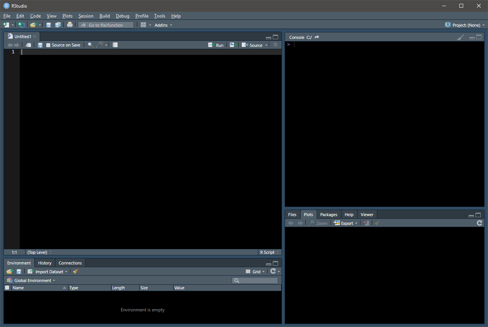

Update R by installing new versions using the process described above or by using the handy installr package.
library(tidyverse) since doing loads ggplot2, tibble, tidyr, readr, purrr, dplyr, stringr, and forcats.If you only need a single command from a given package, use a double colon to call it; in some cases, this can prevent conflicts in the command namespace.
R can read virtually any tabular data file (and is rapidly improving its database capabilities).
library(readr)
df_csv = read_csv("Comma Separated Values.csv")
library(haven)
df_stata = read_dta("Stata File.dta")
df_sas = read_sas("SAS File.sas7bdat")
df_spss = read_spss("SPSS File.sav")
library(readxl)
df_excel = read_excel("Excel Spreadsheet.xlsx")The package “dplyr,” included in the tidyverse, includes several verbs that ease data munging:
library(dplyr)
df_example %>% select() # Subset columns.
df_example %>% filter() # Subset rows.
df_example %>% arrange() # Sort/order by columns.
df_example %>% mutate() # Create new variables/columns.
df_example %>% group_by() # Groups data by variable.
df_example %>% summarize() # Reduce multiple values to a single value.The arduous process of data tidying falls outside the scope of a cheat sheet, but learning how to combine the above verbs with the powerful pipe operator will make your life significantly easier.
## Rows: 30
## Columns: 7
## $ rating <dbl> 43, 63, 71, 61, 81, 43, 58, 71, 72, 67, 64, 67, 69, 68, ...
## $ complaints <dbl> 51, 64, 70, 63, 78, 55, 67, 75, 82, 61, 53, 60, 62, 83, ...
## $ privileges <dbl> 30, 51, 68, 45, 56, 49, 42, 50, 72, 45, 53, 47, 57, 83, ...
## $ learning <dbl> 39, 54, 69, 47, 66, 44, 56, 55, 67, 47, 58, 39, 42, 45, ...
## $ raises <dbl> 61, 63, 76, 54, 71, 54, 66, 70, 71, 62, 58, 59, 55, 59, ...
## $ critical <dbl> 92, 73, 86, 84, 83, 49, 68, 66, 83, 80, 67, 74, 63, 77, ...
## $ advance <dbl> 45, 47, 48, 35, 47, 34, 35, 41, 31, 41, 34, 41, 25, 35, ...##
## Pearson's product-moment correlation
##
## data: rating and complaints
## t = 7.737, df = 28, p-value = 1.988e-08
## alternative hypothesis: true correlation is not equal to 0
## 95 percent confidence interval:
## 0.6620128 0.9139139
## sample estimates:
## cor
## 0.8254176The easystats project’s correlation package, while not on CRAN, is the best at examining multiple correlations at once.
## # A tibble: 21 x 10
## Parameter1 Parameter2 r CI_low CI_high t df p Method n_Obs
## <chr> <chr> <dbl> <dbl> <dbl> <dbl> <int> <dbl> <chr> <int>
## 1 rating complaints 0.825 0.662 0.914 7.74 28 4.17e-7 Pears~ 30
## 2 rating privileges 0.426 0.0778 0.682 2.49 28 1.89e-1 Pears~ 30
## 3 rating learning 0.624 0.340 0.803 4.22 28 4.16e-3 Pears~ 30
## 4 rating raises 0.590 0.292 0.784 3.87 28 9.57e-3 Pears~ 30
## 5 rating critical 0.156 -0.216 0.489 0.838 28 1.00e+0 Pears~ 30
## 6 rating advance 0.155 -0.217 0.488 0.831 28 1.00e+0 Pears~ 30
## 7 complaints privileges 0.558 0.248 0.765 3.56 28 1.88e-2 Pears~ 30
## 8 complaints learning 0.597 0.301 0.788 3.94 28 8.50e-3 Pears~ 30
## 9 complaints raises 0.669 0.407 0.829 4.77 28 1.05e-3 Pears~ 30
## 10 complaints critical 0.188 -0.185 0.513 1.01 28 1.00e+0 Pears~ 30
## # ... with 11 more rows